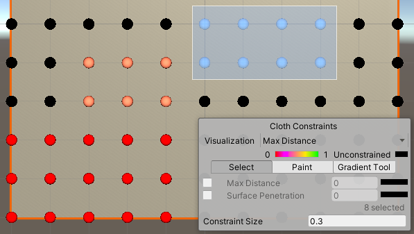
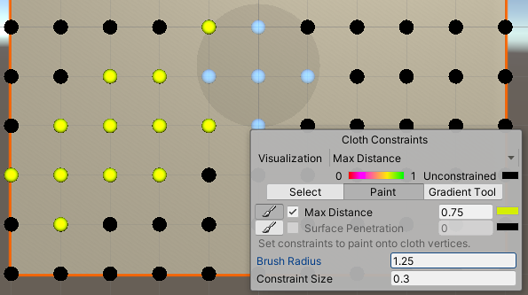

Cloth
Switch to ScriptingThe Cloth component works with the Skinned MeshThe main graphics primitive of Unity. Meshes make up a large part of your 3D worlds. Unity supports triangulated or Quadrangulated polygon meshes. Nurbs, Nurms, Subdiv surfaces must be converted to polygons. More info
See in Glossary Renderer to provide a physics-based solution for simulating fabrics. It is specifically designed for character clothing, and only works with skinned meshes. If you add a Cloth component to a non-skinned Mesh, Unity removes the non-skinned Mesh and adds a skinned Mesh.
To attach a Cloth component to a skinned Mesh, select the GameObject in the Editor, click the Add Component button in the Inspector window, and select Physics > Cloth. The component appears in the Inspector.

Properties
| Property | Function |
|---|---|
| Stretching Stiffness | Stretching stiffness of the cloth. |
| Bending Stiffness | Bending stiffness of the cloth. |
| Use Tethers | Apply constraints that help to prevent the moving cloth particles from going too far away from the fixed ones. This helps to reduce excess stretchiness. |
| Use Gravity | Should gravitational acceleration be applied to the cloth? |
| Damping | Motion damping coefficient. |
| External Acceleration | A constant, external acceleration applied to the cloth. |
| Random Acceleration | A random, external acceleration applied to the cloth. |
| World Velocity Scale | How much world-space movement of the character will affect cloth vertices. |
| World Acceleration Scale | How much world-space acceleration of the character will affect cloth vertices. |
| Friction | The friction of the cloth when colliding with the character. |
| Collision Mass Scale | How much to increase mass of colliding particles. |
| Use Continuous Collision | Enable continuous collisionA collision occurs when the physics engine detects that the colliders of two GameObjects make contact or overlap, when at least one has a Rigidbody component and is in motion. More info See in Glossary to improve collision stability. |
| Use Virtual Particles | Add one virtual particle per triangle to improve collision stability. |
| Solver Frequency | Number of solver iterations per second. |
| Sleep Threshold | Cloth’s sleep threshold. |
| Capsule CollidersA capsule-shaped collider component that handles collisions for GameObjects like barrels and character limbs. More info See in Glossary |
An array of CapsuleColliders which this Cloth instance should collide with. |
| Sphere CollidersA sphere-shaped collider component that handles collisions for GameObjects like balls or other things that can be roughly approximated as a sphere for the purposes of physics. More info See in Glossary |
An array of ClothSphereColliderPairs which this Cloth instance should collide with. |
Details
Cloth does not react to all collidersAn invisible shape that is used to handle physical collisions for an object. A collider doesn’t need to be exactly the same shape as the object’s mesh - a rough approximation is often more efficient and indistinguishable in gameplay. More info
See in Glossary in a sceneA Scene contains the environments and menus of your game. Think of each unique Scene file as a unique level. In each Scene, you place your environments, obstacles, and decorations, essentially designing and building your game in pieces. More info
See in Glossary, nor does it apply forces back to the world. When it has been added the Cloth component will not react to or influence any other bodies at all. Thus Cloth and the world do not recognise or see each other until you manually add colliders from the world to the Cloth component. Even after that, the simulation is still one-way: cloth reacts to those bodies but doesn’t apply forces back.
Additionally, you can only use three types of colliders with cloth: a sphere, a capsule, and conical capsule colliders, constructed using two sphere colliders. These restrictions all exist to help boost performance.
Edit Constraints Tool
You can apply constraints to specific vertices of the cloth to give them more or less freedom of movement.
In the InspectorA Unity window that displays information about the currently selected GameObject, asset or project settings, alowing you to inspect and edit the values. More info
See in Glossary, select Edit cloth constraints (top-left button) in the Cloth component. When the tool is active, small spheres appear in the Scene viewAn interactive view into the world you are creating. You use the Scene View to select and position scenery, characters, cameras, lights, and all other types of Game Object. More info
See in Glossary on all vertices of the mesh. They represent the cloth particles to which you can apply constraints. The Cloth Constraints tool window also appears at the bottom right of the Scene view.

Constraint types and colors
For each cloth particle, you can set and display two types of constraints: * Max Distance – the maximum distance a cloth particle can travel from its vertex position. * Surface Penetration – how deep the cloth particle can penetrate the mesh.
The color of a particle represents the relative value of its constraint within the cloth, according to the type of constraint currently selected.
Constraints visualization

| Property | Function | |
|---|---|---|
| Visualization | Allows you to select which constraint type and which particles to display. | |
| Max Distance | Displays only the Max Distance values of the cloth particles. | |
| Surface Penetration | Displays only the Surface Penetration values of the cloth particles. | |
| Manipulate Backfaces | Enable this option to visualize and manipulate particles that might be hidden behind the current facing part of the cloth. | |
| [ Color spectrum ] | Provides the correspondance between particle colors and constraint values for the above selected constraint type, according to the mimimum and maximum values currently applied within the whole cloth. Black always means that the particle has no constraint. | |
| Constraint Size | The display size of the spheres that represent the cloth particles. Adjust this value at your convenience to ease your constraints edition. This property has no effect on the constraints themselves. | |
Constraints edition modes
You can use 3 different modes to edit the cloth constraint values.
| Mode | Description |
|---|---|
| Select | Allows you to apply a fixed constraint value to a pre-selected group of particles. |
| Paint | Allows you to apply a fixed constraint value by painting the cloth particles with a brush. |
| Gradient | Allows to apply a left-to-right linear gradient of constraint values to a pre-selected group of particles. |
The tool properties and the steps that you need to perform are different according to the mode you are using. In all cases, the last step corresponds to the action that applies the constraint values.
With the Select mode:

- Use the mouse cursor to draw a selection box or click on particles one at a time.
- Enable the constraint type that you want to apply to your selection: Max Distance, Surface Penetration, or both.
- Set a value according to the constraint type you just enabled.
With the Paint mode:

- Adjust the Brush Radius according to the area you need to cover with the brush.
- Enable the constraint type you want to apply: Max Distance, Surface Penetration, or both.
- Set a paint value according to the constraint type you just enabled.
- Paint the constraints on the particles with the brush.
With the Gradient mode:

- Ensure to toggle on the 2D view in the Scene view (the tool cannot apply a gradient when in 3D view).
- Use the mouse cursor to draw a selection box or click on particles one at a time.
- Set the limit values of the gradient you want to apply left-to-right within your selection: Gradient Start and Gradient End.
- Enable the constraint type that you want to apply to your selection: Max Distance, Surface Penetration, or both.
Self collision and intercollision
Cloth collision makes character clothing and other fabrics in your game move more realistically. In Unity, a cloth has several cloth particles that handle collision. You can set up cloth particles for:
- Self-collision, which prevents cloth from penetrating itself.
- Intercollision, which allows cloth particles to collide with each other.
To set up the collision particles for a cloth, select the Self Collision and Intercollision button in the Cloth inspector:

The Cloth Self Collision And Intercollision window appears in the Scene view:

Cloth particles appear automatically for skinned Meshes with a Cloth component. Initially, none of the cloth particles are set to use collision. These unused particles appear black:

To apply self-collision or intercollision, you need to select a single set of particles to apply collision to. To select a set of particles for collision, click the Select button:

Now left-click and drag to select the particles you want to apply collision to:

The selected particles appear in blue:

Tick the Self Collision and Intercollision checkbox to apply collision to the selected particles:

The particles you specify for use in collision appear in green:

To enable the self collision behavior for a cloth, to go the Self Collision section of the Cloth Inspector window and set Distance and Stiffness to non-zero values:

| Property: | Function: |
|---|---|
| Distance | The diameter of a sphere around each particle. Unity ensures that these spheres do not overlap during simulations. Distance should be smaller than the smallest distance between two particles in the configuration. If the distance is larger, self collision may violate some distance constraints and result in jittering. |
| Stiffness | How strong the separating impulse between particles should be. The cloth solver calculates this and it should be enough to keep the particles separated. |
Self collision and intercollision can take a significant amount of the overall simulation time. Consider keeping the collision distance small and using self collision indices to reduce the number of particles that collide with each other.
Self collision uses vertices, not triangles, so don’t expect self collision to work perfectly for Meshes with triangles much larger than the cloth thickness.
Paint and Erase modes allow you to add or remove particles for use in collision by holding the left mouse button down and dragging individual cloth particles:

When in Paint or Erase mode, particles specified for collision are green, unspecified particles are black, and particles underneath the brush are blue:

Cloth intercollision
You specify particles for intercollision in the same way as you specify particles for self collision, as described above. As with self collision, you specify one set of particles for intercollision.
To enable intercollision behavior, open the Physics settings (from the main menu in Unity: Edit > Project SettingsA broad collection of settings which allow you to configure how Physics, Audio, Networking, Graphics, Input and many other areas of your project behave. More info
See in Glossary, then select the Physics category) and set Distance and Stiffness to non-zero values in the Cloth InterCollision section:

Cloth intercollision Distance and Stiffness properties have the same function as self collision Distance and Stiffness properties, which are described above.
Collider collision
Cloth is unable to simply collide with arbitrary world geometry, and now will only interact with the colliders specified in either the Capsule Colliders or Sphere Colliders arrays.
The sphere colliders array can contain either a single valid SphereCollider instance (with the second one being null), or a pair. In the former cases the ClothSphereColliderPair just represents a single sphere collider for the cloth to collide against. In the latter case, it represents a conic capsule shape defined by the two spheres, and the cone connecting the two. Conic capsule shapes are useful for modelling limbs of a character.
2017–12–05 Page amended
Cloth self collision and intercollision added in 2017.3 NewIn20173